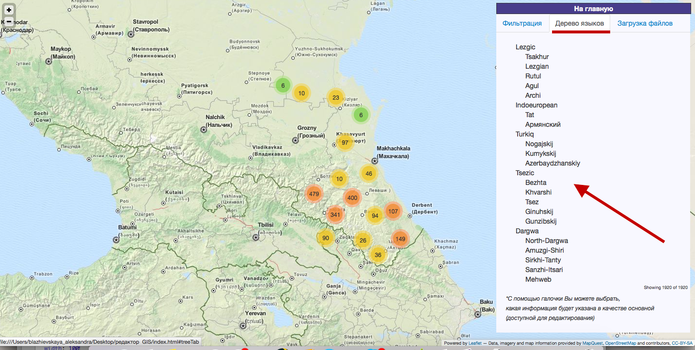
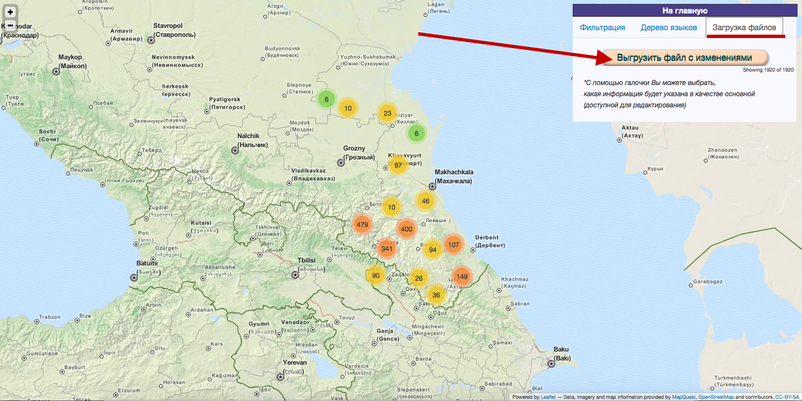

Онлайн-редактор ГИС - это проект, созданный студентами Школы лингвистики НИУ ВШЭ. Этот ресурс даёт возможность пользователю работать с базами языковых данных, иллюстрируя их при помощи карты и редактируя.Для того, чтобы начать пользоваться ресурсом, пользователю необходимо подготовить базу данных. В разделе "Конвертер" можно конвертировать Ваш kml-файл в файл формата CSV. На "Главной" пользователь может загрузить файл в формате CSV (разделитель - ;), с которым ресурс будет работать. После загрузки и перехода на страницу редактора Вы увидите следующее:
Здесь Вы можете фильтровать поиск по значениям параметров (данные взяты из загруженной базы). С помощью галочки пользователь может отметить те параметры, которые будут отображаться в информации к точке и которые доступны для редактирования. Нажав на обозначение точки на карте, пользователь сможет увидеть таблицу с отмеченными галочками параметрами.

Во вкладке "Дерево языков" отображается генеалогическое дерево языков из базы данных, которые генерируется посредством обработки структуры файла. Во вкладке "Загрузка файлов" пользователь может скачать отредактированный файл в том формате, который ему необходим.

"Ресурс создан студенткой НИУ ВШЭ Блажиевской Александрой"